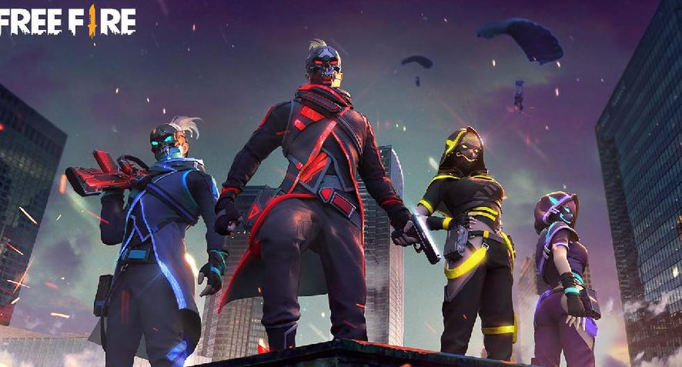
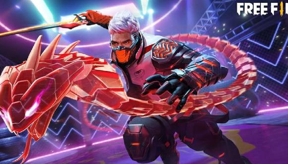

FREE FIRE
Evolucion

Los juegos de batalla para multijugadores ostentan una gran popularidad. Por eso, Free Fire (cuya premisa es la competencia) ha recibido la aprobación de millones de usuarios. Pero, te has preguntado ¿qué significa Free Fire en español? El verdadero significado del nombre; si es así, entonces este artículo es para ti.
Por otra parte, recuerda que puedes descargar Garena Free Fire gratis en su PC o Android y otros dispositivos. Aún así, continuemos para que aprendas de donde viene el nombre de este popular juego.
Los juegos más exitosos suelen ser aquellos en los que se compite para demostrar habilidades y vencer a oponentes reales. Así es Free Fire, un juego basado en un grupo de personas que fueron llevadas a una isla por una organización llamada FF para sobrevivir en una gran batalla.
A continuación, te mostramos toda la información que debes saber a fin de comprender este juego tan adictivo para la población en general.
Free Fire es un juego de supervivencia en modo de disparo que nació en 2017. Este juego forma parte del género acción y aventura y es de clasificación Shooter. La aplicación está disponible en la plataforma Android y iOS para dispositivos móviles.
Free Fire se desarrolla como una pelea a muerte entre 45 y 55 jugadores los cuales pueden encontrarse en cualquier lugar del planeta. Estos son lanzados desde un paracaídas a una isla donde sólo quedará un sobreviviente quien será el ganador.
Free Fire fue creado por una empresa llamada Garena que se encuentra en Singapur. La aplicación se desarrolló en el estudio 111dots Studios y se exhibió como una aplicación de tipo Battle Royale.
En sus inicios, Free Fire podía desarrollarse entre 25 o 30 jugadores. Si se sobrepasaba esta cantidad, la aplicación dejaba de funcionar. Además, el juego no contaba con varias islas porque sólo existía un mapa de la versión Bermuda denominado Whole Island. Free Fire tampoco contaba con una gran variedad de armas, accesorios o personajes.
En noviembre de 2017, la empresa Garena anunció el cierre de Free Fire en su versión beta. Con el cierre se anunció que las cuentas serían formateadas y los usuarios que asociaron sus cuentas a Facebook recibirían un premio por haber jugado Free Fire antes del lanzamiento de su versión oficial.
Al día de hoy, el videojuego es de los más importantes dentro del mundo de los móviles y no tiene nada que envidiarle a su competencia. Aún así, si aún tienes dudas sobre cuál es mejor Fortnite, Free Fire o Pubg, podemos orientarte para que encuentres aquel que más se adapte a ti.
Free Fire significa “Fuego Libre” en español. El “Fuego Libre” se refiere a una zona sin ley donde se desarrolla un operativo de índole militar. Allí, es posible infligir daño a otros con el fin de destruir al enemigo a través del ataque y bajo un tiroteo.
En “Fuego Libre”, se lleva a cabo una guerra donde se provechan las habilidades y se utilizan estratégicamente los suministros y armas disponibles. El propósito siempre es el mismo, destruir a todos los enemigos y sobrevivir.
Efectivamente, desde cierta postura podría catalogarse al videojuego como de guerra. Por esto, si quieres conocer algunos de los los mejores juegos de guerra para jugar en Android o iOS, puedes visitar el enlace anterior donde hablamos de los más destacados.
Free Fire es un juego de modo multijugador masivo donde se inicia sin ninguna protección ni armas ya que estas se van adquiriendo conforme se avanza en un mapa. Este inicio es llamado “Fase inicial voluntaria” donde el jugador debe buscar suministros y equipamiento para sobrevivir y asesinar a otros jugadores.
Con el tiempo, el espacio de batalla se reduce, a fin de que los jugadores se confronten entre sí. Además, Free Fire presenta diversos modos y puede jugarse en parejas o en escuadrones. Cada jugador elige habilidades determinadas y puede utilizar el micrófono del teléfono para comunicarse con los demás o no.
.